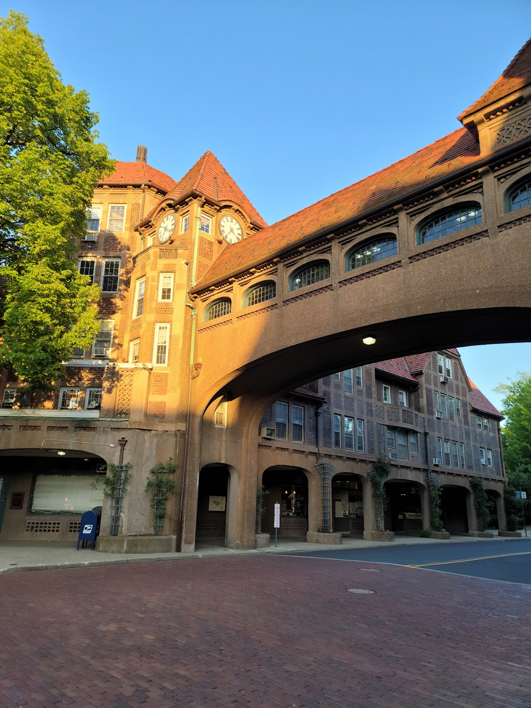
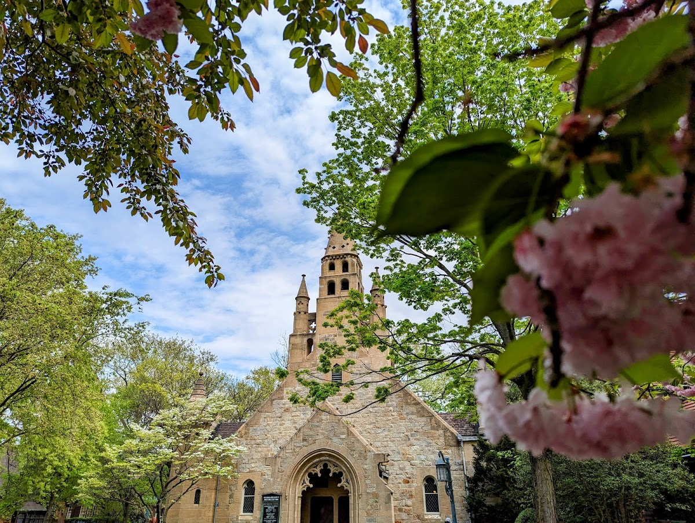
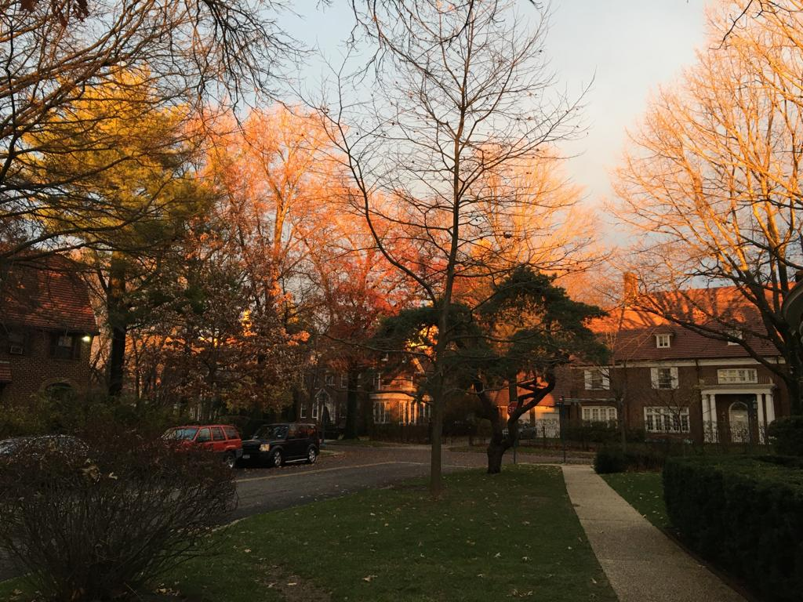
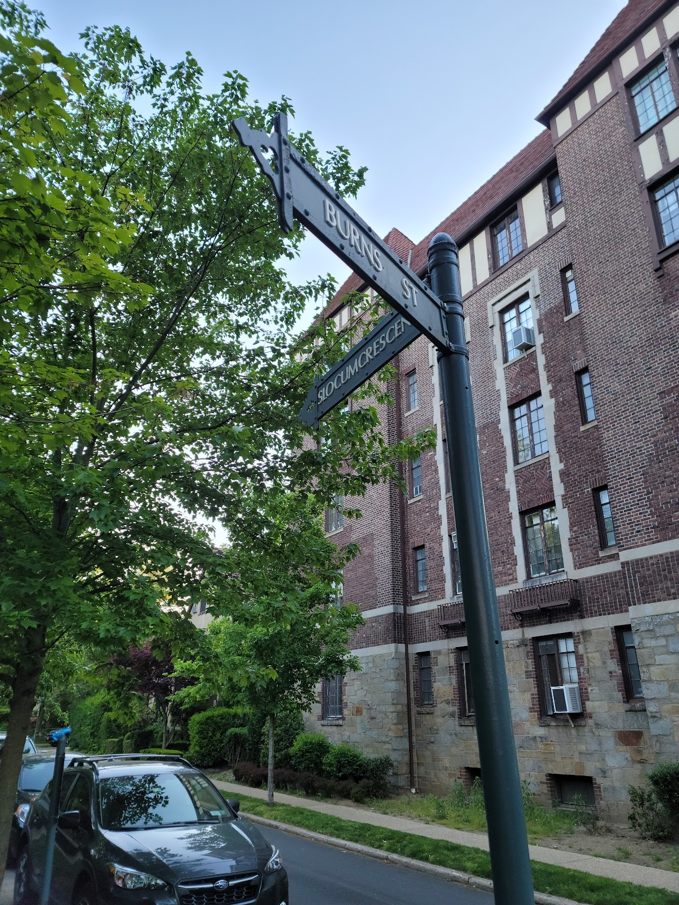
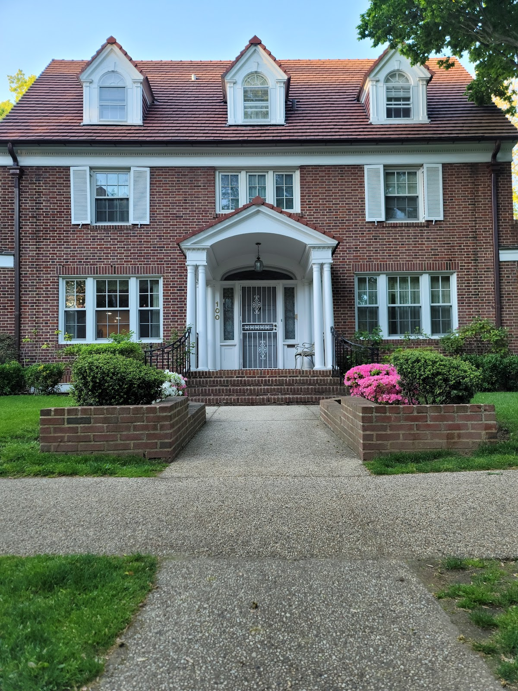

A different pace
Forest Hills
A neighborhood in Queens, known for its Tudor-style homes and the historic Forest Hills Gardens.
Background
Forest Hills was developed in the early 20th century by the Russell Sage Foundation as a model community. The neighborhood's design, inspired by the English Garden City movement, features winding streets, parks, and a mix of housing types, making it a unique example of planned suburban development.
Original AI-assisted background; not independently verified.
From the original map
This barely counts as urbanism because its so far away but its an amazing train station, and the greenery is beautiful in the area, would be great to have streets this green in denser areas!
Check current access before visiting. A place on this map is not necessarily open to the public.
Nearby places
- Sunnyside Gardens4.3 mi ↗
- Wallabout Hasidic Compound5.6 mi ↗
- 1288 Prospect Place5.7 mi ↗
- 137 Oak St5.8 mi ↗
Straight-line distances, not walking routes.
Discussion & corrections





40.71957, -73.84493 · Explore the surrounding area ↗